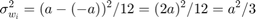
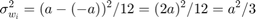

Assignment 3
Contents
Task 1
---------------------

---------------------
Goal
Solution for zero mean
First equality from lienarity of E
Second equality from independence of and
So and does not depend on
Solution for unary variance
We want thus
---------------------

---------------------
First equality from lienarity of E
Second equality from independence of and
So and does not depend on
We want thus